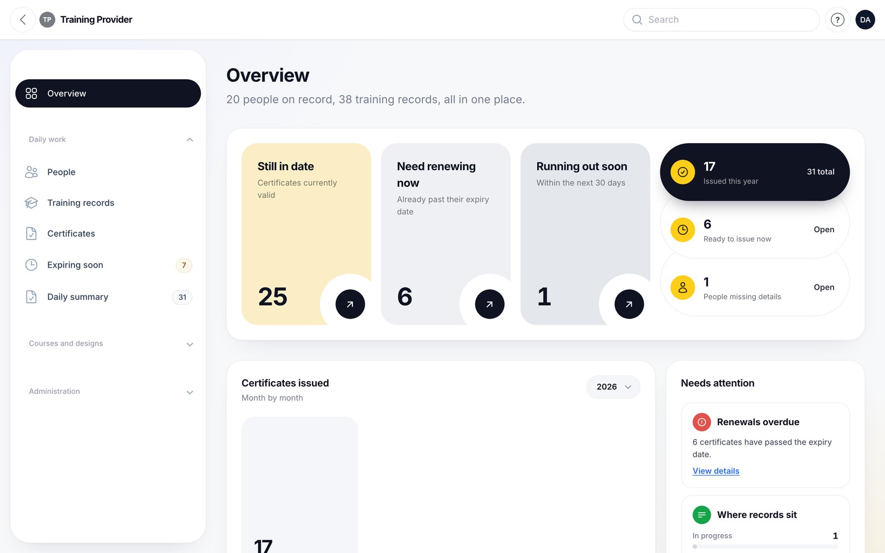
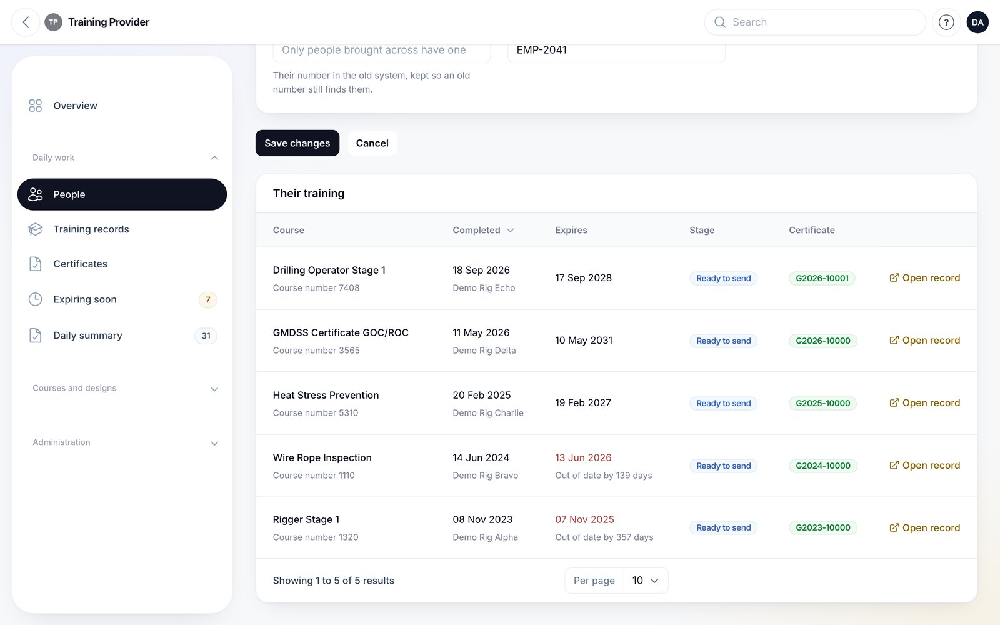
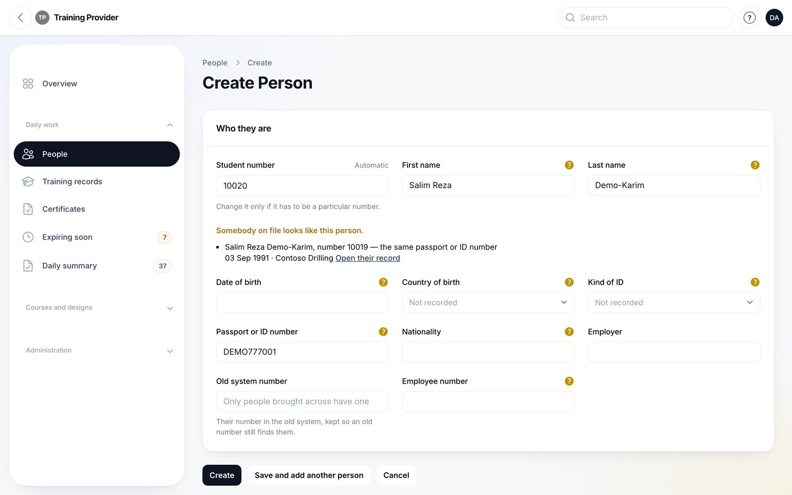
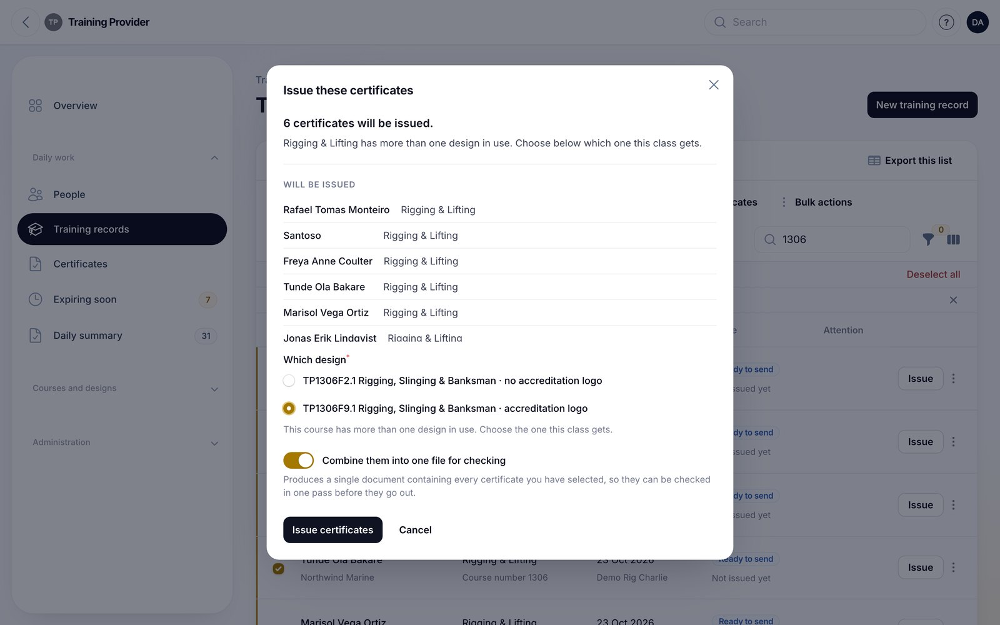
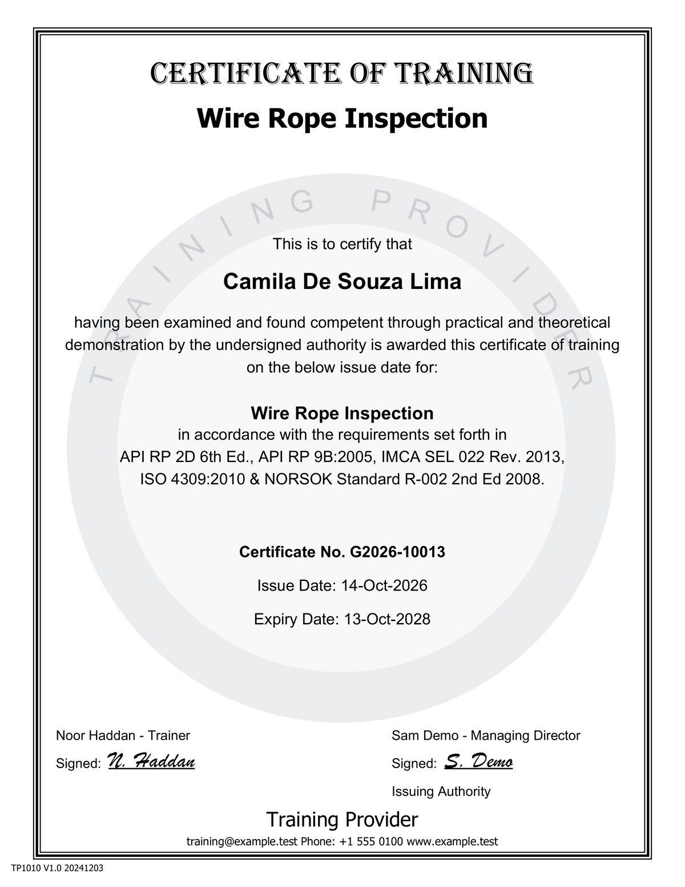
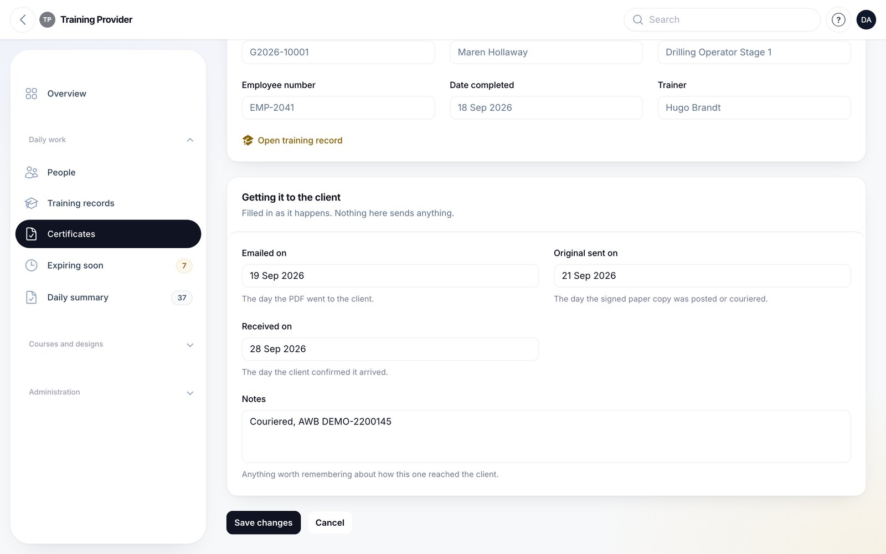
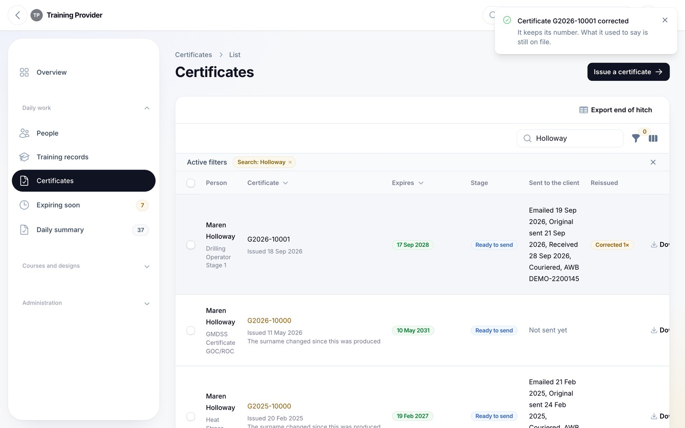
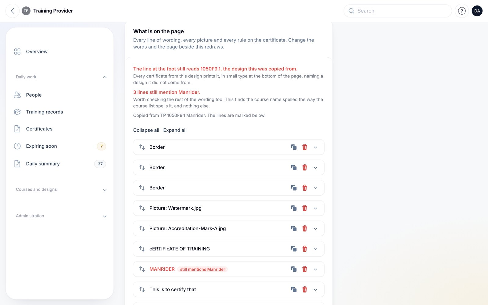
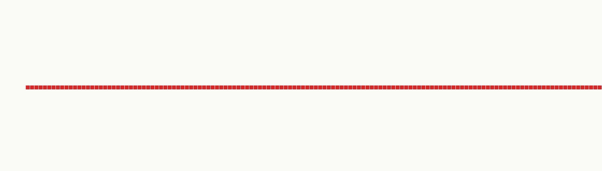

Training & Certificate System
Replacing two subscriptions with a system they own
A training and certification system for a US offshore safety training provider. Built solo, delivered to a fixed deadline, live and running their real records.
The problem
They ran their business on two pieces of software they rented.
One held the records: every trainee, every course taught, every certificate issued, going back more than a decade. The other produced the certificates themselves, from a library of designs built up over years.
Neither talked to the other. Staff typed the same class details into both. The certificate designs lived inside a vendor's account, in a format only that vendor could read. And every year the subscriptions renewed, whether the software still fitted the business or not.
The deeper problem was not the cost. It was that the most valuable thing they owned, a decade of training records and a library of certificate designs their accreditation depends on, sat inside two accounts they did not control.
What I built
A single system that does both jobs, running on their own server, under their own domain, owned outright.

Records
People, training records, courses, clients, rigs, trainers and venues, in one place. Search and filter by any of them.

Student numbers assigned automatically with a duplicate check, because the old way was somebody remembering.

Certificates
179 certificate designs, rebuilt from a legacy library of 1,044, and reproduced faithfully. 150 of their 155 live courses can produce a certificate. The five that cannot are not waiting on the build: two they make by hand on purpose, and the others are their own call.


A certificate from the real renderer, with a fictional trainee. The watermark and signatures are placeholders here, so the real document looks richer.
Delivery record
What went out, when, to whom, and whether it was received.

Correcting a certificate keeps its number, copies the outgoing document aside first, and records what it was called, so the document that actually reached a client is never silently overwritten.

Design editor
Copying an existing certificate design and changing it needs no developer. Anything still carrying the previous course's wording is marked, so the person doing it can see what needs changing instead of reading every line.

The hard part
The certificates had to come out identical.
These are accreditation documents. A trainee's certificate is checked by the rig operator who employs them. If the new system produced something that looked almost right, every certificate issued from that day forward would look wrong next to every one issued before it.
So the standard was not "close enough". I extracted every design from the old system, rebuilt the renderer from scratch, and measured the output against the old system's own certificates pixel by pixel.
327 of 146,157 pixels
On the reference design, 99.78% of the new renderer's ink lands within one pixel of the old system's output. Most of the remaining difference is two thin lines in the signature area.
I measured it again on the final build, and the number has not moved.
Every pixel that differs by more than one pixel's distance, enlarged so it can be seen. Nothing else from the certificate is shown.

The densest cluster, zoomed in: one unbroken row.
Timeline
- Aug 7System analysis
- Aug 13Project start
- Aug 22Live on their own server
- Aug 29Design library loaded
- Sep 24Staff training
- Sep 25In daily use
All before their October renewal.
What they ended up with
- Two subscriptions gone. The system is theirs, on their server, under their domain, registered in their company name.
- One place instead of two. Class details entered once.
- The design library out of a vendor's account and into files they hold, with every design recoverable from source.
- Live with real records since late September, with staff across two countries using it daily.
- Nearly 600 automated tests, and a written handover covering the server, the accounts, the costs and every decision that was made and why.
How it was run
Ten weeks, from first payment to a hard deadline set by their renewal date. Fixed price, agreed up front, with anything outside the original scope quoted before it started rather than appearing on an invoice afterwards.
Their own staff were in the system from week three, which is why most of what they asked for was fixed in the same working day. Around two dozen requests came from the people using it, and almost none of them reached the owner.
Certificate rendering in PHP with TCPDF. Deployed on a standalone server with HTTPS and automated backups.